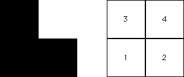
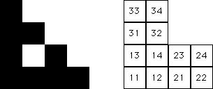
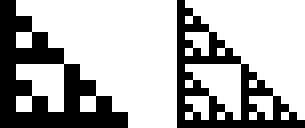

| If T4 is never applied, then no points land in the subsquare S4 with address 4. That is, the upper right subsquare is completely empty. |
|  |
| Because the subsquare S4 contains no points, the
subsquares |
|  |
| Continuing, the subsquares
|
| if i=4, j=4, or k=4, the subsquare Sijk contains no points (below left). |
| Similarly, |
| the subsquare Sijkm contains no points if any of i, j, k, or m is 4 (below right). |
|  |
| The result of continuing this process is clear: |
| if T4 is never applied, every square whose address contains a 4 is empty. |
| With this restrction, we see the IFS generates a right isosceles Sierpinski gasket. This is no surprise, because the IFS {T1, T2, T3} generates a right isosceles Sierpinski gasket. |
Return to Driven IFS with forbidden combinations.